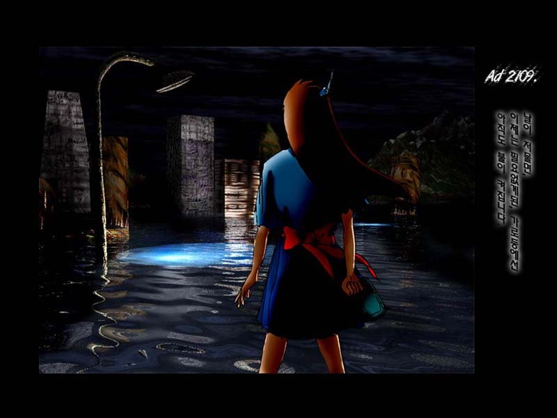

97 양병석 먼저, 가로등을 3d Max에서 모델링한 후, 3ds화일로 저장해서 Brice3d로 Import해설랑, Photoshop에서 2D image와 합성, 보정했습니다. 물에 잠긴도시위에 가로등이 빛나고 있다는 설정은 Cafe Alpha라는 만화에서 얻어온거죠.
먼저, 가로등을 3d Max에서 모델링한 후, 3ds화일로 저장해서 Brice3d로 Import해설랑, Photoshop에서 2D image와 합성, 보정했습니다. 물에 잠긴도시위에 가로등이 빛나고 있다는 설정은 Cafe Alpha라는 만화에서 얻어온거죠.